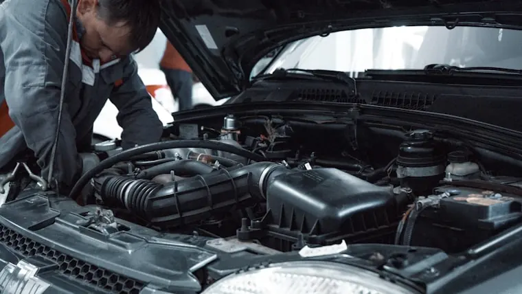
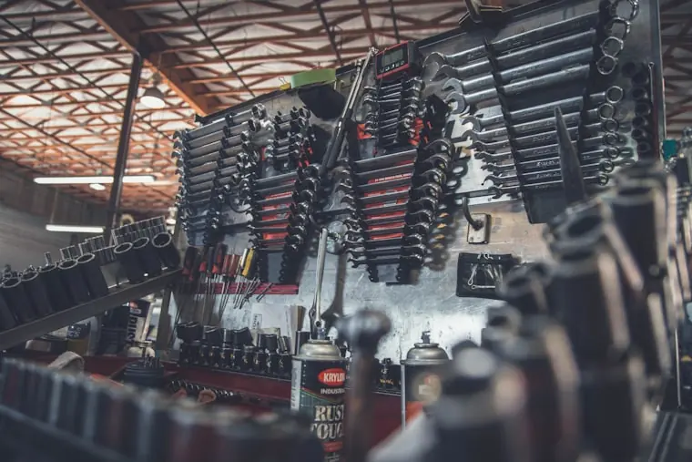

Revisão preventiva
Óleo, filtros, freios e checklist ilustrativo.
R$ 320
Uma demonstração de como serviços, diferenciais, horários e processo de orçamento podem ser organizados para transmitir confiança.

Os dados abaixo são fictícios e demonstram como uma oficina pode apresentar serviços sem sobrecarregar o visitante com linguagem técnica.
Óleo, filtros, freios e checklist ilustrativo.
Scanner, análise de sensores e diagnóstico.
Avaliação digital e correção de geometria.
Serviço apresentado após avaliação técnica.

A estrutura pode apresentar serviços, garantias, regiões atendidas, horários e processo de aprovação do orçamento com informações fáceis de consultar.
Categorias e descrições em linguagem acessível.
Explicação de avaliação, orçamento e aprovação.
Chamada direta para o WhatsApp comercial.
As fotografias são referências visuais desta demonstração e não representam um cliente real.

Na versão do cliente, esta área recebe os dados e as condições reais da oficina.
Área ilustrativa · sem rastreamento
Uma landing page bem construída responde exatamente ao que o cliente procura antes mesmo do primeiro contato. Se algum dos pontos abaixo descreve o seu negócio, uma página dedicada faz diferença desde a primeira semana.
Muitos clientes evitam ligar. Um botão de orçamento pelo WhatsApp reduz a barreira e aumenta o número de pedidos recebidos por dia.
Revisão, troca de pneus, freios, suspensão e alinhamento organizados por categoria ajudam o motorista a entender o que a oficina resolve.
Certificações, tempo de mercado, especialidades e avaliações dos clientes constroem credibilidade antes do primeiro contato.
Uma seção de regiões atendidas elimina a dúvida e direciona o fluxo de procura para a oficina certa.
Ao pesquisar por oficina mecânica, o cliente escolhe entre as primeiras opções visíveis. A landing page coloca seu nome nessa posição.
Fale diretamente com Bruno e veja como adaptar esta estrutura aos serviços e à identidade do seu negócio.
Visual editorial, serviços claros e chamada comercial direcionada ao WhatsApp.
Ver demonstração ↗Fotografia forte, menu objetivo e informações comerciais fáceis de localizar.
Ver demonstração ↗Apresentação de especialidades, áreas de atuação e orçamento pelo WhatsApp.
Ver demonstração ↗